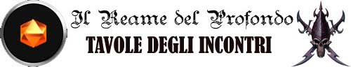
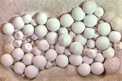
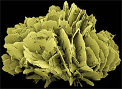

INCONTRI
ERRANTI NELLA ZONA DEI MOGG
(ad eccezione del Pendio dei Pipistrelli e del
Complesso dei Mogg)
| TIRO (1d6) | GIORNO ORE 6 - 17 (1D12+5) | NOTTE ORE 18 - 5 (1D12) |
| 1 | INCONTRO ERRANTE | INCONTRO ERRANTE |
| 2 | NESSUN INCONTRO | NESSUN INCONTRO |
| 3+ | NESSUN INCONTRO | NESSUN INCONTRO |
| TAVOLA DEGLI INCONTRI ERRANTI | |
| TIRO (2d10) | TIPOLOGIA DI INCONTRO |
| 2 | INCONTRO SPECIALE |
| 3 | 1d12: (1-4) TROLL CAVE (link), (5-8) CRYSTALIS (link), (9-12) SHADOW (link) |
| 4 | PERSONAGGI NON GIOCANTI |
| 5 | 1d20: (1-5) BASILISK (link), (6-9) CRUSHER (link), (10-12) BASILISK Poisonous (link), (13-15), BULETTE (link), (16-20) LUDROTH (link) |
| 6 | ABERRAZIONI O MELMOIDI |
| 7 | PIANTIFORMI |
| 8 | 1d20: (1-9) TREN, (10-14) NORUG, (15-17) GNOLL, (18-20) MINOTAUR |
| 9 | 1d12: (1-10) MOGG |
| 10 | 1d12: (1-8) ANIMALI O PARASSITI (10-12) EVENTI NATURALI |
| 11 | 1d12: (1-8) ANIMALI O PARASSITI (10-12) EVENTI NATURALI |
| 12 | 1d12: (1-8) ANIMALI O PARASSITI (10-12) EVENTI NATURALI |
| 13 | 1d12: (1-10) MOGG |
| 14 | 1d20: (1-9) TREN, (10-14) NORUG, (15-17) GNOLL, (18-20) MINOTAUR |
| 15 | PIANTIFORMI |
| 16 | ABERRAZIONI O MELMOIDI |
| 17 | 1d20: (1-5) BASILISK (link), (6-9) CRUSHER (link), (10-12) BASILISK Poisonous (link), (13-15), BULETTE (link), (16-20) LUDROTH (link) |
| 18 | 1d12: (1-6) ROPER (link), (7-12), GEMMAR (link) |
| 19 | 1d12: (1-7) LUCENT WORM (link), (8-12) CAVE WORM (link) |
| 20 | INCONTRO SPECIALE |
| TAVOLA DEGLI ANIMALI O PARASSITI | |
| TIRO (2d6) | TIPOLOGIA DI INCONTRO |
| 2 | 1d12: (1-4) RAGNO FANTASMA (link), (5-8) SPIDER STEAM (link), (9-12) SHADOW ASP (link) |
| 3 | 1d20: (1-4) RAGNO DELLE TRAPPOLE (link), (5-10) VORR (link), (11-16) STIRGE (link), (17-20) PLATED CENTIPEDE (link) |
| 4 | 1d20: (1-7) BAT GIANT (1d4+1) (link), (8-11) ARACNIDE SPINE ROSSE (link), (12-16), TAPEWORM (link), (17-20) VERMHYDRA (link) |
| 5 | 1d20: (1-8) DEVOURER WORM (link), (9-12) ARACNIDE ASSASSINO (link), (13-20) RAGNO DEL MUSCHIO VERDE (link) |
| 6 | 1d20: (1-6) BAT LARGE (2d4+2) (link), (7-11) RAGNO GIGANTE (link), (12-15) TARANTOLA NERA (link), (16-20) BUG LIQUEFIER (link) |
| 7 | 1d20: (1-10) BUE DELLE CAVE (link) (11-15) CAVE GECKO (link) (16-20) COCKROACH GIANT (link) |
| 8 | 1d20: (1-6) BAT LARGE (2d4+2) (link), (7-11) RAGNO GIGANTE (link), (12-15) TARANTOLA NERA (link), (16-20) BUG LIQUEFIER (link) |
| 9 | 1d20: (1-8) DEVOURER WORM (link), (9-12) ARACNIDE ASSASSINO (link), (13-20) RAGNO DEL MUSCHIO VERDE (link) |
| 10 | 1d20: (1-7) BAT GIANT (1d4+1) (link), (8-11) ARACNIDE SPINE ROSSE (link), (12-16), TAPEWORM (link), (17-20) VERMHYDRA (link) |
| 11 | 1d20: (1-4) RAGNO DELLE TRAPPOLE (link), (5-10) VORR (link), (11-16) STIRGE (link), (17-20) PLATED CENTIPEDE (link) |
| 12 | 1d12: (1-4) RAGNO FANTASMA (link), (5-8) SPIDER STEAM (link), (9-12) SHADOW ASP (link) |
| TAVOLA DEI PIANTIFORMI | |
| TIRO (2d6) | TIPOLOGIA DI INCONTRO |
| 2 | ROTTENWOOD (link) |
| 3 | MYCONID (link) |
| 4 | MALOVOLUS (link) |
| 5 | ASCOMOID (link) |
| 6 | GIANT MUSHROOM (link) |
| 7 | VIOLET FUNGUS (link) |
| 8 | GIANT MUSHROOM (link) |
| 9 | ASCOMOID (link) |
| 10 | MALOVOLUS (link) |
| 11 | MYCONID (link) |
| 12 | ROTTENWOOD (link) |
| TAVOLA DELLE ABERRAZIONI E DEI MELMOIDI | |
| TIRO (2d6) | TIPOLOGIA DI INCONTRO |
| 2 | MAUGOLOTH (link) |
| 3 | OTYUGH (link) |
| 4 | 1d12: (1-6) ARACNIS (link), (7-12) KEUNK (link) |
| 5 | 1d12: (1-6) CUBO GELATINOSO (link), (7-10) BLOOD OOZE (link), (11-12) BLACK PUDDING (link) |
| 6 | 1d12: (1-6) CUBO GELATINOSO (link), (7-10) BLOOD OOZE (link), (11-12) BLACK PUDDING (link) |
| 7 | GRICK (link) |
| 8 | 1d12: (1-6) CUBO GELATINOSO (link), (7-10) BLOOD OOZE (link), (11-12) BLACK PUDDING (link) |
| 9 | 1d12: (1-6) CUBO GELATINOSO (link), (7-10) BLOOD OOZE (link), (11-12) BLACK PUDDING (link) |
| 10 | 1d12: (1-6) ARACNIS (link), (7-12) KEUNK (link) |
| 11 | OTYUGH (link) |
| 12 | MAUGOLOTH (link) |
| TAVOLA DEGLI INCONTRI SPECIALI | |
| TIRO | TIPOLOGIA DI INCONTRO |
| 1 | HYDRA, SPITTING (link) |
| 2 | SHADOW DRAGON |
| 3 | CAVES NIGHTMARE (link) |
INCONTRI ERRANTI NELLA ZONA DEI MYCONID
| TAVOLA DEGLI INCONTRI ERRANTI | |
| TIRO (2d10) | TIPOLOGIA DI INCONTRO |
| 2 | INCONTRO SPECIALE |
| 3 | 1d12: (1-4) TROLL CAVE (link), (5-8) CRYSTALIS (link), (9-12) SHADOW (link) |
| 4 | PERSONAGGI NON GIOCANTI |
| 5 | 1d20: (1-5) BASILISK (link), (6-9) CRUSHER (link), (10-12) BASILISK Poisonous (link), (13-15), BULETTE (link), (16-20) LUDROTH (link) |
| 6 | 1d20: (1-17) ABERRAZIONI O MELMOIDI, (18-20) FUNGUS SKELETON (link) |
| 7 | 1d20: (1-5) TREN, (6-10) NORUG, (11-13) GNOLL, (14-18) MOGG, (19-20) MINOTAUR |
| 8 | PIANTIFORMI |
| 9 | 1d12: (1-10) MYCONID (link) |
| 10 | 1d12: (1-8) ANIMALI O PARASSITI (10-12) EVENTI NATURALI |
| 11 | 1d12: (1-8) ANIMALI O PARASSITI (10-12) EVENTI NATURALI |
| 12 | 1d12: (1-8) ANIMALI O PARASSITI (10-12) EVENTI NATURALI |
| 13 | 1d12: (1-10) MYCONID (link) |
| 14 | PIANTIFORMI |
| 15 | 1d20: (1-5) TREN, (6-10) NORUG, (11-13) GNOLL, (14-18) MOGG, (19-20) MINOTAUR |
| 16 | 1d20: (1-17) ABERRAZIONI O MELMOIDI, (18-20) FUNGUS SKELETON (link) |
| 17 | 1d20: (1-5) BASILISK (link), (6-9) CRUSHER (link), (10-12) BASILISK Poisonous (link), (13-15), BULETTE (link), (16-20) LUDROTH (link) |
| 18 | 1d12: (1-6) ROPER (link), (7-12), GEMMAR (link) |
| 19 | 1d12: (1-7) LUCENT WORM (link), (8-12) CAVE WORM (link) |
| 20 | INCONTRO SPECIALE |
INCONTRI ERRANTI NELLE CAVERNE OSCURE
| TAVOLA DEGLI INCONTRI ERRANTI | |
| TIRO (2d10) | TIPOLOGIA DI INCONTRO |
| 2 | INCONTRO SPECIALE |
| 3 | 1d12: (1-4) TROLL CAVE (link), (5-8) CRYSTALIS (link), (9-12) SHADOW (link) |
| 4 | PERSONAGGI NON GIOCANTI |
| 5 | 1d20: (1-5) BASILISK (link), (6-9) CRUSHER (link), (10-12) BASILISK Poisonous (link), (13-15), BULETTE (link), (16-20) LUDROTH (link) |
| 6 | ABERRAZIONI O MELMOIDI |
| 7 | PIANTIFORMI |
| 8 | 1d20 (1-7) NORUG, (8-11) GNOLL, (12-17) MOGG, (18-20) MINOTAUR |
| 9 | 1d12: (1-10) TREN (link) |
| 10 | 1d12: (1-8) ANIMALI O PARASSITI (10-12) EVENTI NATURALI |
| 11 | 1d12: (1-8) ANIMALI O PARASSITI (10-12) EVENTI NATURALI |
| 12 | 1d12: (1-8) ANIMALI O PARASSITI (10-12) EVENTI NATURALI |
| 13 | 1d12: (1-10) TREN (link) |
| 14 | 1d20 (1-7) NORUG, (8-11) GNOLL, (12-17) MOGG, (18-20) MINOTAUR |
| 15 | PIANTIFORMI |
| 16 | ABERRAZIONI O MELMOIDI |
| 17 | 1d20: (1-5) BASILISK (link), (6-9) CRUSHER (link), (10-12) BASILISK Poisonous (link), (13-15), BULETTE (link), (16-20) LUDROTH (link) |
| 18 | 1d12: (1-6) ROPER (link), (7-12), GEMMAR (link) |
| 19 | 1d12: (1-7) LUCENT WORM (link), (8-12) CAVE WORM (link) |
| 20 | INCONTRO SPECIALE |
| TAVOLA DEGLI EVENTI NATURALI | |
| TIRO | TIPOLOGIA DI EVENTO |
| 1 | CADUTA MASSI |
| 2 | DISPERSIONE DI GAS TOSSICI |
| 3 | FUORIUSCITA IMPROVVISA DI VAPORE BOLLENTE |
| 4 | CADAVERE O CARCASSA |
| 5 | FOSSA NASCOSTA |
| 6 | FUNGHI |
| 7 | FUNGHI LUNARI |
| 8 | FORMAZIONE ROCCIOSA PARTICOLARE |
| CADUTA MASSI | |
 |
Quando
si verifica questo evento si tiri 1d6 per determinare dove si è
verificato: Nel caso in cui il gruppo è coinvolto tutti i personaggi devono superare una prova di sorpresa (ai fini delle penalità al tiro salvezza successivo. Ogni personaggio e/o creatura deve tirare 1d6 con 1-3 sarà investito da 1d20: (1) 1 (2-6) 2 (7-14) 3 (15-19) 4 (20) 5 rocce e dovrà effettuare un tiro salvezza su riflessi per ognuna al fine di evitarla. Se viene colpito costui subirà 1d12: (1-3) 1d4 (4-9) 1d6 (10-12) 1d8 danni (a seconda della grandezza del masso) per ogni roccia che lo ha colpito. |
| DISPERSIONE DI GAS TOSSICI |
|
Nella
zona ove si reca il gruppo di verifica una dispersione di gas tossico.
Tutti i personaggi ne subiranno gli effetti e dovranno superare un tiro
salvezza su veleno. Si tiri 1d10 per determinare gli effetti del gas: |
| FUORIUSCITA IMPROVVISA DI VAPORE BOLLENTE |
|
Data la conformazione vulcanica della zona ove si reca il gruppo lo stesso può essere investito da un repentino getto di vapore bollente. Ogni personaggio deve tirare 1d6: (1-2) Sarà colpito in pieno dal getto; (3-4) Sarà colpito parzialmente dal getto (subendo metà dei danni); (5-6) Non sarà colpito dal getto. Il getto potrà essere delle seguenti potenze: 1d12: (1-8) Getto da 8 danni da calore; (9-12) Getto da 12 danni da calore. Tutti i danni potranno essere dimezzati superando un tiro salvezza su riflessi. I personaggi dovranno tirare una prova di sorpresa senza penalità per verificare se siano sopresi dalla fuoriuscita di vapore. I personaggi che posseggono la competenza observation possono superare una prova nella stessa, se la prova ha successo costoro non dovranno effettuare la prova di sorpresa e riceveranno un bonus di +10% al suddetto tiro salvezza su riflessi. |
| CADAVERE O CARCASSA |
|
Verificare l'appartenenza tirando nella Tavola degli Incontri. La carcassa emana un odore pungente di cadavere che i personaggi possono avvertire da discreta distanza 3d10*10 metri. La presenza della carcassa può attirare animali o bestie feroci, quando i personaggi si avvicinano alla carcassa tirare nuovamente 1d6 con risultato di 1 qualcuno sarà stato attirato dalla carcassa, tirare quindi nella Tavola degli Incontri (ripetere il tiro se il risultato non considerabile una creatura che può essere attirata dalla carcassa). Se i personaggi restano nei pressi della carcassa oltre ai normali tiri per gli incontri ripetere il tiro suddetto una volta per il giorno ed una volta per la notte. Si tiri 1d20 con un risultato da 1 a 12 la carcassa non è stata ripulita dagli oggetti eventualmente trasportati. |
| FOSSA NASCOSTA |
|
Mentre i personaggi camminano calpestano una zona di terreno che in realtà nasconde una fossa nascosta
artificialmente oppure provocano un cedimento accidentale del terreno. Ogni personaggio e/o creatura deve tirare 1d6 con 1-3 sarà
coinvolto dalla fossa e dovrà effettuare un tiro salvezza su riflessi per evitare di caderci dentro. I personaggi che
possiedono la competenza observation possono provare ad
utilizzarla, qualora superano la prova riceveranno un bonus di +10% al tiro
salvezza. I personaggi caduti subiranno danni a seconda della profondità del
fosso. Per determinare la tipologia del fosso effettuare i seguenti tiri: |
| FUNGHI |
|
I
personaggi si trovano all'interno di una zona con presenza di funghi. Si
tiri 1d10 per determinare la tipologia dei funghi incontrati: |
|
|||||
| 1d100 (1-17) Pathogenic Rocks, (18-34) Radiant Crystal, (35-51) Darkstone, (52-80) Perle di Grotta, (81-100) Fiori di cristallo | |||||
|
Pathogenic Rocks: Parte delle rocce che formano i cunicoli
sotterranei del Reame del Profondo possono acquistare la capacità magica
di diffondere germi patogeni. Sezione di roccia presenti nel cunicolo
diventano, a chiazze, porosi e giallastri iniziando ad emettere un forte
odore di zolfo. Si noti che questo fenomeno è temporaneo in quanto le
rocce perderanno questa capacità una volta trascorsi 3d10 giorni
dall'incontro. Qualora, inoltre, parte delle rocce interessate da questo
effetto venga rimossa dalla parete la stessa perderà immediatamente la
capacità di diffondere germi patogeni. Chi continua ad inoltrarsi
nel cunicolo interessato da questo fenomeno verrà in contatto con i
germi patogeni e dovrà superare immediatamente un tiro salvezza contro
malattia per non essere contagiato dalla seguente patologia tipica del
sottosuolo: Malaria del Profondo |
|||||
|
Radiant Crystal: Parte delle rocce che formano i cunicoli sotterranei del Reame del Profondo possono acquistare la capacità magica di emettere luce. Una serie di cristalli di roccia emettono una luminosità di tipo bluastro e l'intero cunicolo appare come cosparso di stelle di diverse dimensioni. Nell'intero settore di cunicoli interessati da questo fenomeno di natura magica sarà diffusa una luce di intensità pari a quella della luna (penombra: Non si vedono piccoli dettagli, 50% di non riuscire a leggere testi scritti, - 2 al tiro per colpire, 20% di fallire nel lancio delle magie, Impedisce l'attivazione dell'infravisione). Si noti che questo fenomeno è temporaneo in quanto le rocce perderanno questa capacità una volta trascorsi 3d10 giorni dall'incontro. Qualora, inoltre, parte delle rocce interessate da questo effetto venga rimossa dalla parete la stessa perderà immediatamente la capacità di emettere la luce. Queste zone illuminate attraggono naturalmente le creatura, per tale motivo, si tiri immediatamente 1d6 per determinare la presenza di incontri erranti (si tratta di un tiro supplementare che potrà dare luogo ad un incontro errante contestuale a questo). Qualora si verifichi l'incontro si ignori il risultare di un ulteriore evento naturale e quello relativo ai non morti della tipologia SHADOW (in tal caso si tiri nuovamente nella tabella di incontri erranti per determinare un diverso incontro). |
|||||
|
Darkstone: Parte delle rocce che formano i cunicoli sotterranei del Reame del Profondo possono acquistare la capacità magica di assorbire la luce emessa dalle fonti luminose. Nell'intero settore di cunicoli interessati da questo fenomeno di natura magica la zona di minima luminosità sarà eliminata (divenendo oscurità) e le altre zone illuminate saranno tutte ridotte di un grado di illuminazione (la zona di illuminazione piena, ad esempio, corrisponderà ad una zona di scarsa luminosità). Si noti che questo fenomeno è temporaneo in quanto le rocce perderanno questa capacità una volta trascorsi 3d10 giorni dall'incontro. Qualora, inoltre, parte delle rocce interessate da questo effetto venga rimossa dalla parete la stessa perderà immediatamente la capacità di assorbire la luce. Queste zone di oscurità attraggono naturalmente le ombre, per tale motivo vi è il 33% di possibilità che all'interno del settore di cunicolo interessato da questo fenomeno possano incontrarsi i non morti della tipologia SHADOW (link). |
|||||
|
 |
Perle
di Grotta: Sono formazioni rocciose particolari create e levigate
dall'acqua che scorre o gocciola nelle caverne. Con il passare dei
secoli queste formazioni rocciose diventano ciottoli sferici di colore
variabile (spesso bianco) dalla dimensioni di qualche centimetro e dal
peso di 0,2 libbre l'uno. Queste particolari formazioni rocciose, per la
loro rarità, sono collezionate come oggetti ornamentali. Il valore di
ogni Perla di Grotta si aggira intorno alle 5 monete d'oro. Per
determinare il numero di queste rocce rinvenuti su consulti la seguente
tabella. |
||||
|
 |
Fiori
di cristallo: Sono formazioni rocciose cristalline, anche chiamate Fiori
delle Caverne, che sono apprezzate da molte razze che vivono nel Reame
del Profondo per la loro bellezza estetica ed il valore commerciale. I
Fiori di Cristallo sono solitamente costituiti di sali minerali o di
gesso e si sviluppano a forma di petali fibrosi o prismatici. I Fiori di
Cristallo sono particolarmente ricercati dagli Elfi Scuri che amano
adornare le loro tavole e le loro scrivanie con questi oggetti. |
||||